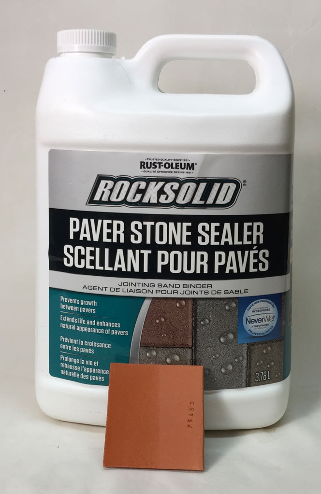
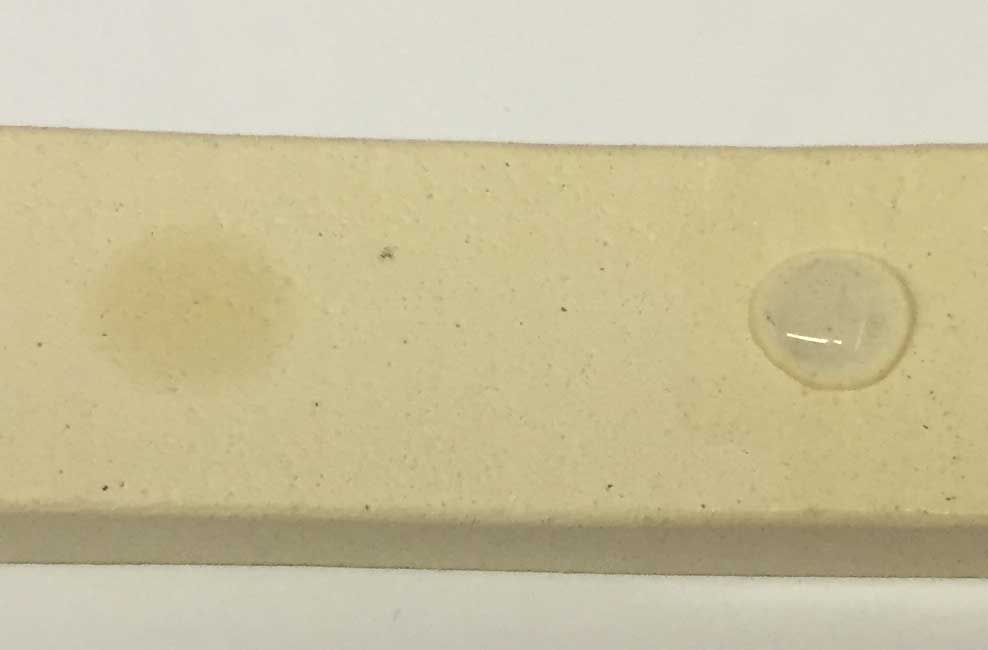
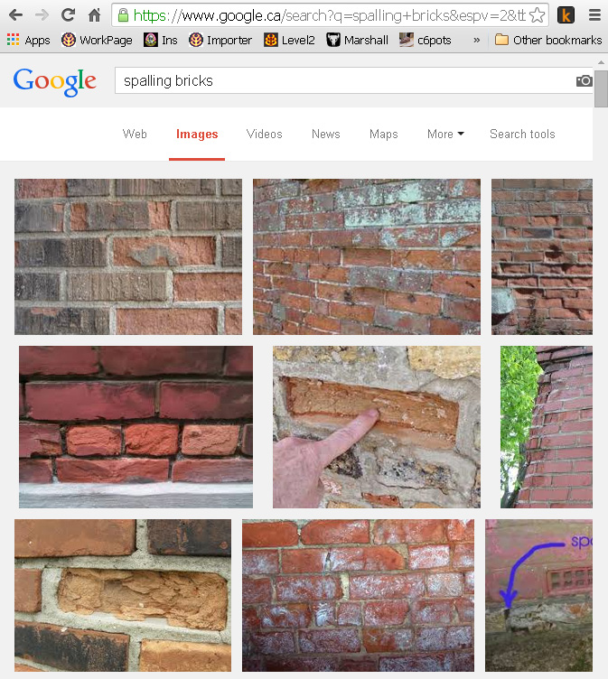
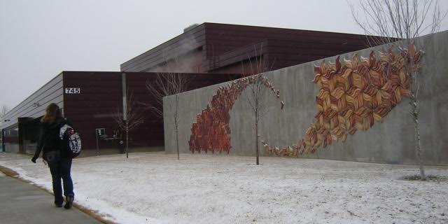
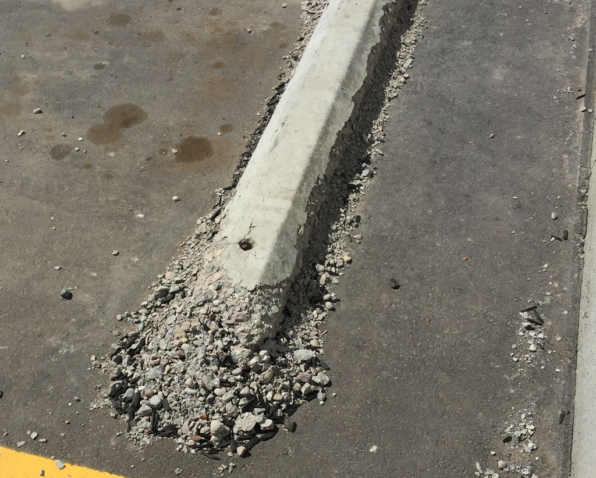
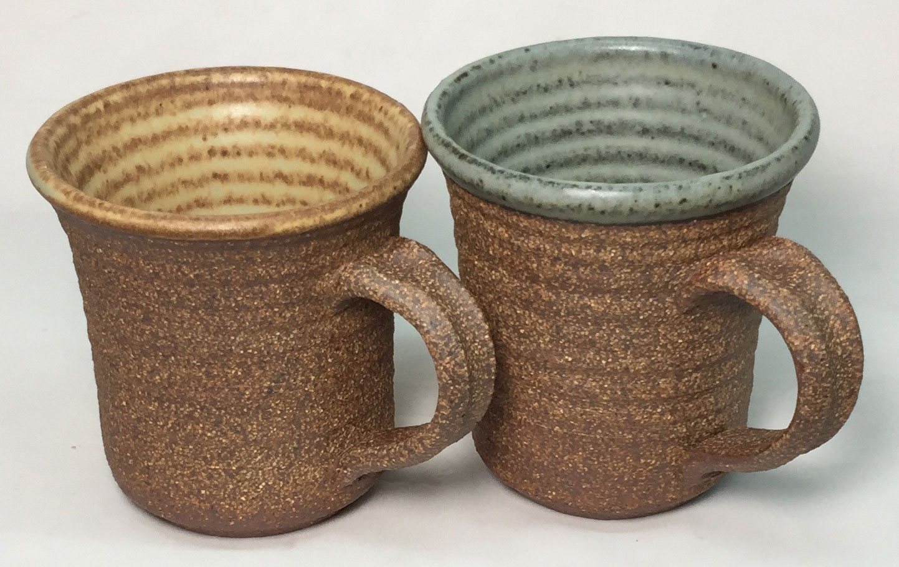

A Low Cost Tester of Glaze Melt Fluidity
A One-speed Lab or Studio Slurry Mixer
A Textbook Cone 6 Matte Glaze With Problems
Adjusting Glaze Expansion by Calculation to Solve Shivering
Alberta Slip, 20 Years of Substitution for Albany Slip
An Overview of Ceramic Stains
Are You in Control of Your Production Process?
Are Your Glazes Food Safe or are They Leachable?
Attack on Glass: Corrosion Attack Mechanisms
Ball Milling Glazes, Bodies, Engobes
Binders for Ceramic Bodies
Bringing Out the Big Guns in Craze Control: MgO (G1215U)
Can We Help You Fix a Specific Problem?
Ceramic Glazes Today
Ceramic Material Nomenclature
Ceramic Tile Clay Body Formulation
Changing Our View of Glazes
Chemistry vs. Matrix Blending to Create Glazes from Native Materials
Concentrate on One Good Glaze
Copper Red Glazes
Crazing and Bacteria: Is There a Hazard?
Crazing in Stoneware Glazes: Treating the Causes, Not the Symptoms
Creating a Non-Glaze Ceramic Slip or Engobe
Creating Your Own Budget Glaze
Crystal Glazes: Understanding the Process and Materials
Deflocculants: A Detailed Overview
Demonstrating Glaze Fit Issues to Students
Diagnosing a Casting Problem at a Sanitaryware Plant
Drying Ceramics Without Cracks
Duplicating Albany Slip
Duplicating AP Green Fireclay
Electric Hobby Kilns: What You Need to Know
Fighting the Glaze Dragon
Firing Clay Test Bars
Firing: What Happens to Ceramic Ware in a Firing Kiln
First You See It Then You Don't: Raku Glaze Stability
Fixing a glaze that does not stay in suspension
Formulating a body using clays native to your area
Formulating a Clear Glaze Compatible with Chrome-Tin Stains
Formulating a Porcelain
Formulating Ash and Native-Material Glazes
G1214M Cone 5-7 20x5 glossy transparent glaze
G1214W Cone 6 transparent glaze
G1214Z Cone 6 matte glaze
G1916M Cone 06-04 transparent glaze
Getting the Glaze Color You Want: Working With Stains
Glaze and Body Pigments and Stains in the Ceramic Tile Industry
Glaze Chemistry Basics - Formula, Analysis, Mole%, Unity
Glaze chemistry using a frit of approximate analysis
Glaze Recipes: Formulate and Make Your Own Instead
Glaze Types, Formulation and Application in the Tile Industry
Having Your Glaze Tested for Toxic Metal Release
High Gloss Glazes
Hire Us for a 3D Printing Project
How a Material Chemical Analysis is Done
How desktop INSIGHT Deals With Unity, LOI and Formula Weight
How to Find and Test Your Own Native Clays
I have always done it this way!
Inkjet Decoration of Ceramic Tiles
Is Your Fired Ware Safe?
Leaching Cone 6 Glaze Case Study
Limit Formulas and Target Formulas
Low Budget Testing of Ceramic Glazes
Make Your Own Ball Mill Stand
Making Glaze Testing Cones
Monoporosa or Single Fired Wall Tiles
Organic Matter in Clays: Detailed Overview
Outdoor Weather Resistant Ceramics
Painting Glazes Rather Than Dipping or Spraying
Particle Size Distribution of Ceramic Powders
Porcelain Tile, Vitrified Tile
Rationalizing Conflicting Opinions About Plasticity
Ravenscrag Slip is Born
Recylcing Scrap Clay
Reducing the Firing Temperature of a Glaze From Cone 10 to 6
Setting up a Clay Testing Program in Your Company or Studio
Simple Physical Testing of Clays
Single Fire Glazing
Soluble Salts in Minerals: Detailed Overview
Some Keys to Dealing With Firing Cracks
Stoneware Casting Body Recipes
Substituting Cornwall Stone
Super-Refined Terra Sigillata
The Chemistry, Physics and Manufacturing of Glaze Frits
The Effect of Glaze Fit on Fired Ware Strength
The Four Levels on Which to View Ceramic Glazes
The Majolica Earthenware Process
The Potter's Prayer
The Right Chemistry for a Cone 6 Magnesia Matte
The Trials of Being the Only Technical Person in the Club
The Whining Stops Here: A Realistic Look at Clay Bodies
Those Unlabelled Bags and Buckets
Tiles and Mosaics for Potters
Toxicity of Firebricks Used in Ovens
Trafficking in Glaze Recipes
Understanding Ceramic Materials
Understanding Ceramic Oxides
Understanding Glaze Slurry Properties
Understanding the Deflocculation Process in Slip Casting
Understanding the Terra Cotta Slip Casting Recipes In North America
Understanding Thermal Expansion in Ceramic Glazes
Unwanted Crystallization in a Cone 6 Glaze
Using Dextrin, Glycerine and CMC Gum together
Volcanic Ash
What Determines a Glaze's Firing Temperature?
What is a Mole, Checking Out the Mole
What is the Glaze Dragon?
Where do I start in understanding glazes?
Why Textbook Glazes Are So Difficult
Working with children
Outdoor Weather Resistant Ceramics
Description
How can you be sure that the porosity of your fired ceramic ware is low enough to prevent freeze-thaw breakdown in the winter?
Article
Almost all fired stoneware and sculptural ceramic has some porosity. Porosity (also called absorption) is typically measured by weighing a sample, boiling it in water, weighing it again, and calculating the percentage increase in weight. In climates exposed to freezing temperatures, water-soaked ceramic experiences a buildup of pressures within the material as ice formation proceeds in the pore space (water expands 9% as it freezes). If the ceramics cannot withstand this then flakes and scales are going to separate and fall away from the surface. Over a period of years, the material can completely crumble. Concrete is susceptible to the same problem, this phenomenon is called Spalling. While potters may never encounter this phenomenon, sculptors and mural makers need to confront it (as does the construction industry).
Examples of clay porosity (these assume that the clays are fired at a temperature appropriate for each, under-firing will increase the porosity and reduce the strength):
| Red or brown burning stoneware clays | 0.5-4% |
| White or buff burning stonewares | 1-3% |
| Porcelains | 0-0.5% |
| Warp resistant sculpture clays | 5-10% |
| Vitreous sculpture clays | 2-5% |
| Red terra-cotta clays | 10-14% |
| White or buff talc clays | 8-10% |
Thus, if climatic conditions demand it, outdoor ceramic installations must be able to survive the stresses of freeze-thaw. Since any ceramic with more than zero percent absorption demonstrates water penetration it would appear that it is theoretically susceptible to freeze-thaw damage. For practical purposes, however, this is not true. The brick industry considers any clay having under 5% porosity resistant to freeze/thaw failure (regardless of its closed and open porosity). Actually, that is not completely true either, it is implied that the ceramic has been fired to a state of significant strength and salt-attack resistance. Obviously, terra cotta fired at cone 06 is weak (you can scratch it easily), it would not be able to withstand the stresses even if it could be densified to somehow have a low porosity.
Closed and Open Porosity
More porous ceramic actually has both absorbency and porosity (technically they are not the same). A fired piece will naturally absorb a certain amount of water to fill the pores (open porosity ). However, more porous clay matrixes also have capillary networks that normal soaking does not fill (closed porosity ). This auxiliary network permits fired ceramics to survive freeze-thaw because the expansion of the water has somewhere to go. Thus, the simple addition of finely dispersed cellulose fiber to a clay body lacking closed porosity could theoretically improve the capillary network.
It is possible to perform a simple test based on the principle that a sample of fired ceramic boiled in water will absorb more moisture than one that is simply soaked. This is because for the former, the entire network is filled, for the latter only the pores. This test compares the cold soaking absorption or open porosity (C) of a clay with its boiled absorption or closed porosity (B) . The structural ceramic industry requires a C/B result of less than 0.78 (in products firing to more than 5% porosity) in order to pass CSA and ASTM specifications for outdoor use. If you are buying clay, your supplier should be able to tell you what the porosity will be at the temperature you plan to use it. If it is over 5% (as noted above) then you should be aware of the closed-over-open porosity also. If they sell the material for sculpture and know that customers are using it outside in freeze-thaw conditions, they should be able to tell you this figure.
Testing a Specific Clay Body
Of course, the only way to have confidence is to do some testing. Do not just test the clay at the temperature at which you will fire it, but higher and lower to get a profile of what it does (especially if your kiln varies in temperature throughout the chamber or you do not use cones to verify the temperature reached). We tested a specific cone 6 buff burning function stoneware clay body (Plainsman M340). At cone 6 its open porosity is 2.5% and closed porosity is 2.8% (or 2.5/2.8=0.91). This is a failing grade! However, since it is well under the 5% closed porosity trigger, it passes for outdoor use. At cone 5 it scores 3.2/3.4=0.95. This is actually a worse score, but it still passes since 3.4% is well under 5%. However, at cone 4 it scores 5.3/6.4=0.83. This is a fail. If this body were fired to cone 3 or 2, the C/B score would likely improve and it would pass. That means a body with higher porosity can actually be better for resistance to freeze-thaw spalling (assuming of course that it has good strength).
Of course, testing the body in actual freeze/thaw conditions would be ideal. But there are a lot of complications. We all have freezers. Since modeling what happens in an outdoor climate would be extremely difficult it seems logical to simply subject the clay to repeated cycles of conditions more extreme than what it would encounter outdoors. However many cycles would be needed, theoretically hundreds (I have dried out, soaked and refrozen bars for half a dozen cycles and could not get spalling even on a terra cotta). In addition, it may not be true that rapid temperature drops or high penetration of water are the most harmful; possibly temperatures hovering up and down close to freezing with just surface water could be more destructive. It could also be true that glazed ceramic (with crazing) is more susceptible than non-glazed (see next section). Other factors are the thickness of the ceramic, how exposed to evaporation the back side is and if there is a density gradient (more dense surface with a more porous interior).
Secret Weapons
Earthenwares fired at low temperatures (e.g. cone 04-06) are especially susceptible to spalling. Although labels and advice might claim otherwise, it is likely possible that your red body/glaze could go to cone 02 and still be stable, even stoneware-like. Redart clay, a major ingredient in red earthenwares in North American fires to about 5% porosity at cone 02 whereas it has more than 12% at cone 06. However white low-fire talc bodies will not be much less porous at cone 02 than at 06 (they are known to spall and one of the poorest choices for outdoor work).
You can artificially make a failing clay suitable by treating the surface with a sealer or a repellent. Sealers soak in and create a root system in the pores. That being said, some companies now claim that a repellent is better because it enables masonry structures to 'breathe' while sealants trap moisture in and can actually exacerbate the problem. However, if the clay is around or just above the 5% trigger, a sealant may be the best solution. If it has a much higher porosity, Siloxane repellent, for example, is said to not darken or discolor masonry walls and lasts about five years of protection (of course that means vigilance to reapply). However, a caution is in order: If the body is porous and the glaze is crazing it will be very difficult or impossible to get the sealant into the craze lines (but the water will get in and freeze there).
Something That Might or Might Not Work
Of course, you can guarantee no freeze/thaw issues by using a smooth clay that will fire to close-to-zero porosity (grogged clays have high porosity). But this will bring other issues. It will warp much more easily on firing. It is more likely to dunt on cooling in the kiln and crack on drying. It could shrink twice as much during firing. The surface texture will be boring (since only white and buff bodies fire near-zero porosity). You could use colored slips but if they are not zero porosity also they may bond well to the body below, will not have the same fired shrinkage and will not likely match the thermal expansion). In short, this is not really an option.
Slips and Engobes: A Possible Source of Big Trouble
Slips and engobes are often not bonded well to the body below, especially at lower temperatures. You might find that if you use slips they could flake off over time because of freeze-thaw.
A Test Procedure
There is a link to the C/B test procedure in the Digitalfire Reference Database (below). The procedure uses 10 mm thick by 25 mm wide by 120 mm long fired test bars and defines a 24-hour soak and weigh, then a 5-hour boil and weigh.
Variables
- Dry Weight - v1
- The weight of a dry test specimen of the fired clay.
- 24hr Wet Weight - v2
- The weight of a specimen that has been soaked for 24 hours in room temperature water and wiped clean of all surface water.
- 5hr Boiled Weight - v3
- The weight of a specimen that has been soaked for 24 hours and boiled for 5 hours and wiped clean of all surface water.
Calculations
- 24hr Absorption - C
- This is a calculation of the C value for this test, that is, the absorption of a clay sample if soaked for 24 hours in cold water.
C = (v2 - v1) / v1
- 5hr Boil Absorption - B
- This is a calculation of the B value, that is, the absorption of a clay bar if soaked for 24 hours and boiled for 5 hours.
B = (v3 - v1) / v1
- Saturation Coefficient - S
- This is a calculation of the C/B value, the cold water absorption divided by the boiling water absorption.
S = C / B
The saturation coefficient S should be less than 0.78 in order to pass CSA and ASTM specs for outdoor use.
Sealing the Surface
Many products are available from building supply stores to seal the surface of concrete and masonry. These just soak in and harden to plug the pores. The use of these is standard practice in construction. So even if your fired ceramic does have a high porosity you can just seal all surfaces.
Links
These relate to the problem of spalling.
- http://www.tkproduct.com/page19.html
- http://www.heafey.com/products/permalok_tech.html
- http://www.seal-it.sk.ca/freezethaw.htm
Related Information
Silicone sealer for porous ceramic for outdoor use

This picture has its own page with more detail, click here to see it.
This is a common sealer available at a hardware store. I have dipped the terra cotta tile and it has dried. The surface of the dipped portion is smoother. It also has a slight sheen and better red color. This sealer even makes it possible to use a porous clay body for outdoors, terra cotta bricks have long be protected against freeze-thaw spalling using products like this.
Acid products are available to remove efflorescence from ceramic surfaces

This picture has its own page with more detail, click here to see it.
Products like this are available at hardware stores. After you have removed the surface scum, be sure to seal it using a sealer (also available at hardware stores).
Porosity sealer that does not create a shine on the surface

This picture has its own page with more detail, click here to see it.
The product claims to be an economical, easy-to-apply, penetrating sealer that resists most common oil-based and water-based stains. Unlike other sealers, it will not leave a difficult-to-remove residue on the surface. Low-odor, water-based formula. Water sheds off ceramic surfaces and this has worked on even highly porous clays having up to 25% porosity.
Silicone sealers prevent water absorbing in porous ceramic

This picture has its own page with more detail, click here to see it.
The right side of this bisque-fired clay bar (which has about 15% porosity) has been surface-treated with a silicone sealant. It repels the water, the drop rolls around on the surface if I tilt the bar. The drop on the left side absorbed into the clay in seconds.
Why you need to know about spalling

This picture has its own page with more detail, click here to see it.
It is easy to find pictures of spalling bricks at google. This happens because water trapped in the pores of ceramic and concrete expands during freezing and breaks it down. This should be a concern to people making architectural and sculpture pieces for outdoors. How do you know if your ceramic will spall? It needs open and closed pore space if over 1% closed porosity. Measure the percentage gain in weight (of a test tile) after a 24-hour water soak, that is 'open porosity'. Then boil for 5 hours and it will soak up more water, measure that as the % closed porosity. The second number needs to be 20% greater than the first. Why? The closed space provides a place for expansion as the water is freezing.
Outdoor murals and freeze-thaw failure (spalling)

This picture has its own page with more detail, click here to see it.
If you are an artist or sculptor and are thinking about taking on a commission to do an outdoor piece think carefully about its vulnerability to spalling if it will experience freezing temperatures (see linked article below). The construction industry deals with this issue every day, take a cue from their experience.
Freeze thaw damage in concrete

This picture has its own page with more detail, click here to see it.
This concrete parking lot curb has disintegrated after one winter. Why? Because the manufacturer did not seal it properly. The same thing will happen to your outdoor ceramic pieces if they have excessive porosity or you do not seal them.
A vitreous sculpture clay. Vitreous enough for functional ware!

This picture has its own page with more detail, click here to see it.
This is P5867, a chocolate brown burning super-plastic base clay (to which 20% coarse grog is added) matures at cone 6. Yet this body is common used at cone 10R. The grog stabilizes the fired matrix enough that it stands up in the kiln. And it fires to a dense product that can withstand any weather. It does have a porosity of 4%, but that is coming from the grog. Several manufacturers around the world make bodies like this, some can have almost double the grog this one has. These two mugs employ engobes on the inside (a brown and a blue, applied at the leather hard stage - L3954N), enabling a smoother glaze surface.
Links
| Tests |
Cold Over Boiled Porosity
Use this test to determine if your fired clay can withstand freeze-thaw and thus be suitable for outdoor use in colder climates. |
| Glossary |
Mosaic Tile
While traditional mosaic imagery have been created from small pieces of glass or stone, computerized equipment is making it increasingly practical to create the pieces from clay or porcelain |
| Glossary |
Brick Making
Brick-making is surprisingly demanding. Materials blending and processing, forming, drying and firing heavy and thick objects as fast as possible are like no other ceramic manufacturing challenge. |
| URLs |
https://www.eieinstruments.com/tiles_&_ceramics_testing_instruments/frost_test/determination-of-frost-resistance-bis-13630-10-en-iso-10545-12
Determination Of Frost Resistance for Ceramic Tile Compliance to standards EN ISO 10545-12, ASTM C1026, IS 13630 (Part-10). |
 PayPal | No tracking, No ads, No paywall, No transient content! Just organized, concise information constantly updated and improved. Was this helpful? Consider supporting me. |
| By Tony Hansen Follow me on        |  |
Got a Question?
Buy me a coffee and we can talk 

https://digitalfire.com, All Rights Reserved
Privacy Policy